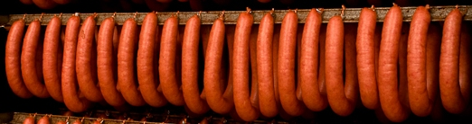
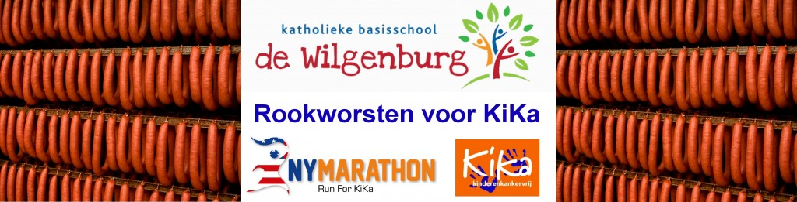

20140131
Brandweer IJsselland.
Jan Roo, de man van Bertine (collega Anja) heeft op 18 januari meegedaan aan de mountainbike toertocht in Staphorst van de brandweer IJsselland.
De deelnemers aan die toertocht hebben
gezamenllijk €110,- gedoneerd voor mijn Run For KiKa
New York !
Anja heeft de cheque overhandigd gekregen van
Bertine.
Deelnemers moutainbike toertocht brandweer IJsselland: BEDANKT !
20140130
Artikel De Stentor.
Op de voorpagina van het 2e deel van de krant
(bladzijde 29) een prachtig artikel door Jaco
Meijboom met een foto van Frans Paalman.
{kind=link}
20140129
!!! Persoonlijke sponsordoel GEHAALD !!!
Vandaag met o.a. de opbrengst van de rookworsten
heb ik mijn persoonlijke sponsordoel van € 7000,-
bereikt !
En niet alleen bereikt: ik ben er ver overheen !
Met het prachtige bedrag van € 8353,11 sta ik nu op
plaats 1 van pagina 1 van het overzicht van de
KiKa-runners !
20140129
De Wilgenburg – Rookworsten voor KiKa.
De leerlingen en het team van de Wilgenburg hebben
1986 rookworsten verkocht !!!
Dat zijn 662 setjes van 3 worsten en is dus 662 x €
2,- = € 1324,- voor KiKa !!!
Een verslag van de actie vind je hier.
HenkjanHolt.nl – Rookworsten voor KiKa.
Door de “HenkjanHolt-Rookworstverkopers”
zijn 160 setjes van 3 worsten verkocht.
Dat zijn 160 setjes van 3 worsten en is dus 160
x € 2,- = € 320,- voor KiKa !!!
Anja, Henk, Hennie, Gerrianne en Germa: Hartelijk
bedankt voor jullie verkoopinspanning!
Verder zijn er ook mensen die fooi hebben gegeven of anders financieel bij hebben gedragen. Het totaal daarvan is €26,41.
In totaal zijn er 2466 rookworsten verkocht en gaat er 822 x € 2,- = € 1644,- + €26,41 (fooi) = €1670,41 naar KiKa !!!
20140125
Beau en Lorena, twee vriendinnen uit
Middenbeemster, hadden vorig jaar zin om iets te gaan
maken voor een goed doel en dachten aan stichting
KiKa. Ze hadden veel verschillende kleuren wol en
zijn daarvan armbandjes gaan vingerhaken. Deze
armbandjes hebben ze langs de deuren en op een
zondagsmarkt verkocht voor €0,25 per stuk en 5 voor
€1,-.
Via 2013 KiKa-runner Joke Martens hoorden ze van “De
wereld van Anne” en het verhaal van Anne greep de
meiden erg aan.
Daarom hebben ze mij vandaag gesponsord met de
opbrengst van hun armbandjes:
{kind=link}
Beau (links) en Lorena: BEDANKT !!!
20140121
Vandaag tijdens duurloop 120 minuten (de langste in de voorbereiding van de Helicon Asselronde) voor het eerst gelopen met de HenkjanHoltHaasvlag. Helemaal geen last van gehad (maar er was dan ook weinig wind).
20140119
Gisteravond was bij Hockey Club Zwolle het
jaarlijkse Grand Diner van HC Zwolle Dames 1 en
HC Zwolle Heren 1.
Caren van der Harst, doelvrouw van Dames 1,
bracht voor mijn actie 2 keer een combinatie
pindakaashuisje + vogelhuisje in.
Eén combinatie leverde € 100,- op en het andere €
130,-.
Totale opbrengst voor mijn actie € 230,- !!!
Caren: Hartelijk dank voor dit initiatief !
Grand Diner bezoekers: Hartelijk dank voor deze
geweldige opbrengst !
20140117
Vandaag bij DHL mijn 2 pakjes van Drukwerkdeal
opgehaald:
– een rol van 12.5 cm dik en 224 cm lang met mijn
“HenkjanHoltHoofdvlag”;
– een rol van 9 cm dik en 40 cm lang met een doek met
o.a. mijn “HenkjanHoltHulpvlag” en
“HenkjanHoltHaasvlag”.
20140116
Vandaag sta ik voor het eerst op de 2e plaats in
het overzicht van de runners op de site van
RunForKiKaNewYork!
De rangorde van dit overzicht is op basis van de
hoogte van het sponsorbedrag.
20140112

Van maandag 13 t/m zondag 19 januari ga ik ook
rookworsten verkopen voor KiKa. Mocht je me daarbij
willen helpen (zonder concurrent van De Wilgenburg te
worden) kijk dan even op http://henkjanholt.nl/acties/henkjanholt-nl-rookworsten-voor-kika .
20140110

Gisteren hebben de leerlingen van groep 5 t/m 8 het
bestelformulier meegekregen.
Mocht het zo zijn dat een leerling aan meer mensen
worsten kan verkopen dan er op één bestelformulier
passen, dan kan een ouder/verzorger hier het bestelformulier
downloaden.
Ik wens de leerlingen en het team van de Wilgenburg
heel veel plezier met de actie, en ik hoop dat
er heel veel rookworsten verkocht worden voor de
stichting Kinderen Kankervrij.
Meer informatie over de worsten en/of de actie vind
je hier .
20140109
Toeval bestaat NIET.
Vanmorgen in een andere wagon van de trein gaan
zitten als gebruikelijk.
Hier bleek nog een Spits te liggen van vrijdag 20
december (was mijn eerste dag van de kerstvakantie)
met daarin
20140107
Vandaag op deze website mijn Voltooide Trainingen
bijgewerkt.
Op dinsdag 15 oktober ben ik gestart met
een trainingsschema voor
de Helicon Asselronde (27.5 km)
tijdens de MidwinterMarathon in Apeldoorn op zondag 2
februari 2014.
Op Voltooide Trainingen vind je
al mijn trainingen die ik heb gedaan sinds de start
van dat schema.
20140105
Vandaag staat de sponsoropbrengst op
en dat is €0,70 meer dan het minimale bedrag dat ik
van Run For KiKa New York OP 15 OKTOBER 2014 !!! aan
sponsoropbrengst moet hebben ingezameld !!!
Iedereen die op welke wijze dan ook heeft bijgedragen
aan dit resultaat: Bedankt !!!
Mijn persoonlijke sponsordoel van
minimaal €7000,- komt in zicht!
20140105
Vandaag het verslag van het legen van de KiKa-zuil bij AH aan de Flora in Deventer op dinsdag 31 december 2013 toegevoegd.
Omdat in januari 2014 stichting Havonos
statiegeldbonnen mag verzamelen heb ik
op dit moment NERGENS een
statiegeldactie. Mocht je een supermarkt (niet
Aldi of Lidl) weten waar wél een flessenautomaat is
maar géén statiegeldactie stuur dan alsjeblieft een
mailtje naar Henkjan@HenkjanHolt.nl
Voor meer informatie over mijn statiegeldacties kijk hier.
20140104
Vanmorgen na de training bij av PEC1910 verrast
met een riante cheque van de “Ik Ren Bij
Ben”-zaterdagochtendgroep.
Héééél erg bedankt allemaal !
Voor nieuws uit 2013 December klik hier.
Terug naar Welkom